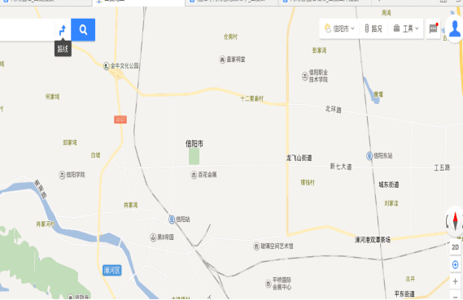
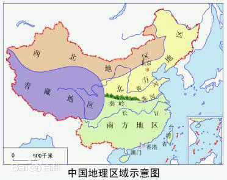

|
地理概况：
信阳，河南省地级市。古称义阳、弋阳、申州，又名申城，位于河南省最南部、淮河上游。东连，南接湖北，为三省通衢，是江淮河汉间的战略要地，鄂豫皖区域性中心城市，中国毛尖之都。
信阳处于武汉城市圈、皖江城市带、中原经济区的结合部和国务院《促进中部地区崛起规划》中的京广、京九;两纵;经济带的腹地，东中部人口密集区的中间位置。
信阳山清水秀，气候宜人，被誉为山水茶都，素有;江南北国、北国江南;之美誉。信阳有着豫风楚韵的地域文化，楚文化与中原文化在这里交融，形成了信阳独特的人文环境。信阳是全国唯一连续九年入选中国十佳宜居城市的城市，荣获中国优秀旅游城市、国家园林城市、中国最具幸福感城市、中国最美城市之一，一带一路；最具开发潜力城市等头衔。
2015年6月5日，涉及鄂豫皖三省、信阳市全境，规划区域总面积达10.86万平方公里的大别山革命老区振兴发展规划;正式获批实施。信阳作为此次规划的核心区域和明确支持发展的重点区。;2016年9月6日， 农业部副部长屈冬玉与河南省副省长王铁分别代表农业部和河南省人民政府，签订了《共同支持国家级信阳茶叶市场建设合作备忘录》
。 |